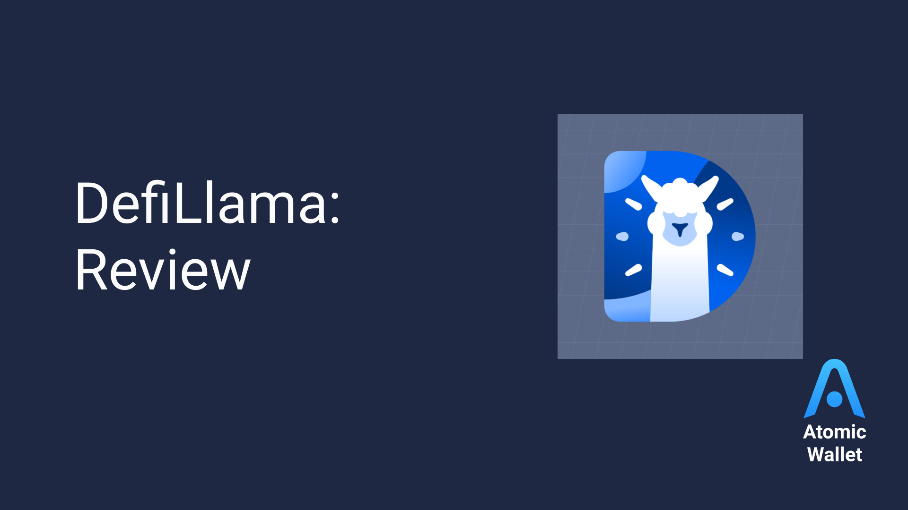

Decoding Swap Llama: My Accidental Dive into Web3's Plumbing
Okay, so picture this: I’m scrolling through Twitter, avoiding actual work (don't tell my boss), when this ridiculously colorful dashboard catches my eye. It’s all flashing numbers, cryptic acronyms like “TVL” and “APR,” and frankly, it looked like a cyberpunk casino gone rogue. That, my friends, was my introduction to DefiLlama.
Now, I’m not a blockchain guru. I’m more of a “slightly-curious-bystander-who-accidentally-stumbled-into-a-rabbit-hole” kind of person. But DefiLlama, despite its initially intimidating appearance, sparked my interest. It’s not just some pretty website; it’s essentially a real-time window into the inner workings of decentralized finance (DeFi), a crucial component of the broader Web3 infrastructure.
What exactly is DefiLlama, then? Think of it like this: imagine you’re trying to understand the global financial system, but instead of relying on opaque reports from banks, you have a publicly accessible, constantly updated dashboard showing the flow of money across all the different players. That’s DefiLlama for the DeFi world. It tracks the total value locked (TVL) in various decentralized applications (dApps), essentially showing how much cryptocurrency is being used within each protocol.
It's fascinating, right? Suddenly, you can see which DeFi projects are booming, which are struggling, and get a sense of the overall health of the ecosystem. Want to know how much ETH is locked in Aave? DefiLlama has you covered. Curious about the daily fluctuations in the TVL of Uniswap? Boom, there's the data.
But here's the thing that initially threw me: the sheer scale of it all. The numbers are mind-boggling, and honestly, a little overwhelming. It’s easy to get lost in the sea of data, especially when you’re not fully fluent in DeFi jargon (and let's be honest, even with some research, I still feel like I'm wading through quicksand sometimes). It's a bit like looking at a map of the internet – you see the connections, but grasping the full complexity is another beast altogether.
Yet, that's also its power. DefiLlama, despite its complexity, democratizes access to information that was previously locked away in the proprietary systems of traditional finance. It provides a level of transparency that's unprecedented. This transparency is vital for building trust in the still-nascent DeFi ecosystem. If you’re considering investing in a DeFi protocol, wouldn’t you want to know how much capital is already involved?
And that's where the "why it matters" part comes in. DefiLlama isn't just a pretty dashboard; it's a crucial piece of Web3 infrastructure. It fuels market intelligence, informs investment decisions, and contributes to the overall health and transparency of the DeFi ecosystem. It's like a canary in a coal mine – a crucial early warning system, highlighting trends and potential risks within DeFi.
This whole journey of understanding DefiLlama has been a bit of a rollercoaster, to be honest. I started with a casual curiosity and ended up spending way too much time poring over charts and graphs. But I also gained a newfound appreciation for the complexity and potential of DeFi, a system that's still in its early days but already showing incredible promise. It’s a reminder that even the most complex systems can be made accessible and transparent, and that's something truly empowering in the ever-evolving landscape of Web3. Now, if you'll excuse me, I have some more DeFiLlama dashboards to explore… my boss is still blissfully unaware of my "research."
Decoding DeFi Llama: My Accidental Journey into the Wild West of Swaps
So, I'll admit it. My foray into the world of decentralized finance (DeFi) started not with a grand vision of disrupting Wall Street, but with a slightly embarrassing Google search: "How do I make my crypto do something besides sit in my wallet looking sad?" Yeah, I know, glamorous, right? Turns out, that "something" often involves swaps, and that's where DeFi Llama – this seemingly innocuous website – came in, unexpectedly becoming my crypto Sherpa.
Now, before you picture some hyper-technical, jargon-laden beast of a website, DeFi Llama is surprisingly user-friendly. It's essentially a dashboard showing you the pulse of the DeFi world – think of it as a Bloomberg Terminal, but for crypto, and (thankfully) less intimidating. It tracks billions of dollars' worth of assets, spread across countless decentralized exchanges (DEXs), from the well-known Uniswap to the more… esoteric options. It’s a fascinating glimpse into the inner workings of this whole decentralized finance thing.
But what does it actually do? At its core, DeFi Llama's role is aggregation. It takes all this disparate data – the trading volumes, the liquidity pools, the various tokens involved – and neatly presents it in an easy-to-understand format. Want to know which DEX is currently king of the hill in terms of total value locked (TVL)? DeFi Llama tells you. Want to see the top performers in a specific sector, say, lending protocols? It's got you covered. It's like having a comprehensive cheat sheet for navigating the sometimes-bewildering landscape of DeFi swaps.
Initially, I was mostly interested in the “TVL” numbers. I mean, who isn't fascinated by gigantic sums of money sloshing around in a digital ecosystem? But, as I dug deeper, I started to appreciate its broader implications. DeFi Llama isn't just a pretty face; it’s a vital tool for transparency and risk assessment. By providing a consolidated view of the DeFi market, it empowers users to make more informed decisions. Are those astronomical APYs on a new platform too good to be true? A quick peek at DeFi Llama's data might just save you a hefty loss.
But here's where things get interesting. While DeFi Llama offers a valuable service, it's not a crystal ball. Remember, this is the Wild West of finance. Things change rapidly. A protocol that's on top today might be yesterday's news tomorrow. The data is a snapshot in time, and it's crucial to understand its limitations. You still need to do your own research – a healthy dose of skepticism is always a good thing in this space, regardless of what the Llama says!
So, my initial, somewhat naive quest to make my crypto "do something" led me to DeFi Llama. It’s become more than just a resource; it’s a window into the exciting, chaotic, and occasionally baffling world of decentralized finance. It’s shown me the sheer scale and complexity of this space, but also the potential – and the risks – involved. This isn't a story with a neat and tidy conclusion, more like a journey that’s still unfolding. And that, to me, is the most exciting part. The Llama has led me to a deeper understanding of DeFi, but the adventure is far from over. Now, if you’ll excuse me, I’ve got some more crypto to… well, you know… make do something.
Defi Llama's Unexpected Journey: From Spreadsheet to Savior (Maybe?)
Remember that feeling, that initial thrill of discovering something new, something amazing, only to realize it’s a tangled mess of jargon and confusing interfaces? That was me, back in the early days of DeFi. I was drowning in a sea of protocols, each promising moon-shot gains but often delivering headaches instead. It felt like trying to navigate a labyrinth blindfolded, while juggling chainsaws. That's what spurred the creation of DeFi Llama, and that's the story I want to tell you.
It started, embarrassingly enough, with a spreadsheet. Yes, a humble spreadsheet. I was tracking my own DeFi investments—a fairly standard practice, I guess, for anyone who’d bitten the crypto bug—but quickly realized I wasn't alone in my struggle to keep track of everything. My friends, fellow crypto enthusiasts, were equally lost in the wilderness of decentralized finance. We were all desperately searching for a single source of truth, a dashboard that wouldn't require a PhD in blockchain to understand.
So, fueled by caffeine and a healthy dose of frustration, I began consolidating data. I scraped information from various platforms, battling APIs that fought back with cryptic error messages. It was tedious, messy work—think less glamorous Silicon Valley startup and more late-night coding sessions fueled by instant ramen. But slowly, a picture began to emerge. A picture of a chaotic, exciting, and potentially game-changing ecosystem… but one desperately in need of a good map.
And that's where DeFi Llama's mission solidified. It wasn't just about tracking TVL (Total Value Locked), though that's a key function. It was—and is—about bringing transparency and accessibility to the world of decentralized finance. It's about empowering users, letting them make informed decisions without needing to be a coding ninja or a financial analyst. It’s about demystifying DeFi.
Now, I’ll be honest. There are days I question whether we’re actually making a difference. The crypto world is volatile, constantly evolving, and frankly, a bit bonkers. There's always the nagging feeling that we’re chasing a moving target, constantly playing catch-up with the latest protocol launch or rug pull. And those rug pulls? Let’s just say they've added a few grey hairs to my already-stressed-out existence.
But then, I see the comments on our website, the messages from users who say DeFi Llama has saved them from making costly mistakes. I see the data visualization sparking discussions in our community, and I remember why we started. It's not about getting rich quick—although, hey, wouldn’t that be nice?—it’s about building something meaningful, something that genuinely helps people navigate this complex and often bewildering world.
This journey, from that initial spreadsheet to the relatively robust platform DeFi Llama is today, has been more akin to a rollercoaster than a smooth highway. There have been moments of pure exhilaration and moments of sheer panic. It's been a wild ride, and I wouldn't trade it for anything.
So, what's next? That’s a question I’m still pondering. Will DeFi Llama become the ultimate DeFi guide? Only time will tell. But what I know for sure is that we’re committed to our mission: making the decentralized finance space more accessible and transparent, one spreadsheet (or maybe server) at a time. And if along the way, we manage to help a few people avoid a financial disaster or two, then that will be a pretty amazing accomplishment.
DefiLlama's Swap: More Than Just Numbers – A Deep Dive (and Maybe a Little Panic)
Okay, confession time. I’m not a DeFi guru. I’m more of a “mildly intrigued observer who occasionally panics about impermanent loss” kind of guy. So when I started digging into DefiLlama’s swap functionality, I wasn’t expecting fireworks. I expected… spreadsheets. Lots and lots of intimidating spreadsheets. Boy, was I wrong.
What initially drew me in was the sheer convenience. I mean, let's be honest, navigating the decentralized finance world feels like trying to assemble IKEA furniture while blindfolded – a chaotic explosion of confusing interfaces and cryptic acronyms. DefiLlama, however, presents a surprisingly user-friendly gateway to the otherwise bewildering world of cross-chain swaps. It's like someone finally decided to translate the cryptic instructions into something even I can understand.
But user-friendliness isn't everything, right? So what truly sets DefiLlama's swap feature apart? For me, it’s a combination of factors that go beyond a pretty interface.
First, the transparency is exceptional. You get a clear breakdown of fees, slippage, and the underlying DEX used for the swap. This isn’t just crucial for avoiding unexpected costs; it's also a crucial step towards building trust in a space often riddled with shady practices. I appreciated that – knowing exactly where my money was going, and how much it was costing me, felt oddly reassuring. It’s like finally seeing the fine print on a contract without needing a magnifying glass and a law degree.
Second, the breadth of supported chains and DEXs is truly impressive. I was able to swap tokens across networks I'd previously only read about in hushed whispers in crypto forums (don't judge). This interconnectedness is a game-changer, opening up a whole new world of possibilities – or at least, the potential for a whole new world of possibilities. I’m still working on the potential part.
Third, and this is something I initially underestimated: the aggressively simple interface. It's almost too simple. I actually found myself wondering if I was missing some hidden, ultra-powerful feature. But then I realized: simplicity is often a sign of elegant design. In the crazy, complex world of DeFi, that’s a refreshing change.
Now, I’m not going to pretend DefiLlama's swap is perfect. There are still minor quirks. Sometimes the gas fees feel a bit… steep, let's just say. And the information overload on some screens can still be overwhelming at times. But these are minor imperfections compared to the overall usability and transparency.
So, what did I learn from this little journey into DefiLlama's swap feature? More than just how to swap tokens, honestly. I learned that even a complex system like DeFi can be made accessible and transparent – if the right design choices are made. It’s a reminder that user experience matters, even in the world of blockchain technology. It’s a testament to the fact that sometimes, less is actually more. And frankly, it eased my anxiety about accidental impermanent loss, which is a win in itself.
This wasn't just a review; it was a mini-odyssey of discovery, punctuated by moments of both awe and minor panic (mostly about gas fees). And that, my friends, is why DefiLlama’s swap feature stands out – it's not just about the numbers, it’s about the human experience of navigating the often-daunting world of decentralized finance.
Lost in DeFi Translation: How DeFi Llama Helps Me (and You) Navigate the Multichain Maze
Okay, confession time. I once spent a good hour – a precious hour of my life I'll never get back – trying to swap some obscure token on Polygon to Ethereum. I felt like I was trying to order a pizza in a foreign country using only mime. The gas fees alone were enough to make me question my life choices. Sound familiar?
The decentralized finance (DeFi) world is booming, right? It's amazing, a truly revolutionary thing. But it also feels, at times, like navigating a sprawling, poorly-lit labyrinth. One built from Legos, except the Legos are different blockchains, each with its own rules, its own quirks, and its own…let’s be honest… confusing interfaces.
This is where DeFi Llama comes in. Think of it as the Rosetta Stone of the DeFi universe, helping you translate between different blockchain dialects. While it doesn't actually do the swapping, it's the crucial guide that helps you find the best place to do it, across multiple chains. And honestly, that's almost more important.
Now, I'm not a hardcore blockchain developer. I'm just a regular person who dabbles in DeFi, occasionally stumbling into a crypto swamp. So, forgive me if I'm oversimplifying things, but here's how I see DeFi Llama’s multichain magic:
First, it aggregates data. Think of it like a tireless librarian, cataloging all the different DeFi protocols across various chains. We're talking Ethereum, of course, but also Avalanche, Polygon, Arbitrum, Optimism – the list keeps growing faster than my crypto portfolio (ahem). They collect TVL (Total Value Locked), which is essentially how much money is sitting in each protocol, and that's a pretty good indicator of liquidity and potential.
But the real genius is in how it presents that data. Forget staring at cryptic API calls. DeFi Llama presents it all in a user-friendly, easily digestible format. You can quickly compare the best DEXs (decentralized exchanges) for your specific needs, taking into account fees, slippage, and available liquidity. Suddenly, that seemingly impossible swap becomes manageable.
I used to bounce between different explorers and websites, desperately trying to compare gas fees. It felt akin to comparing apples and oranges – or, more accurately, comparing apples grown on different planets. DeFi Llama streamlines that process, letting me see all my options side-by-side. It's like having a personal, highly efficient DeFi concierge.
Of course, it's not perfect. Sometimes the data is slightly delayed, and the sheer number of options can feel overwhelming. (Okay, I admit, I'm still occasionally tempted to just stick with my trusty old Ethereum DEX out of sheer habit). But even with its minor flaws, DeFi Llama is a game-changer for anyone trying to navigate the increasingly complex landscape of multichain DeFi. It’s not a silver bullet; it’s more like a really sharp, well-lit machete helping to clear a path through the jungle.
So, where did this journey take us? From a personal anecdote about a frustrating swap to a broader appreciation for DeFi Llama’s role in simplifying the multichain experience. The point isn’t just to understand how DeFi Llama works; it’s to understand how it helps – how it makes the potentially daunting world of DeFi just a little bit more accessible, a little less intimidating, and a lot more enjoyable. And that, my friends, is a victory worth celebrating. Now, if you'll excuse me, I have a few inter-chain swaps to… well, you know.
Lost in the DeFi Jungle: Finding My Way with DefiLlama
Okay, let’s be honest. The world of Decentralized Finance (DeFi) can feel a bit like navigating the Amazon rainforest armed with only a rusty machete and a half-eaten granola bar. I mean, seriously, the sheer volume of protocols, tokens, and complex financial instruments is enough to make your head spin. It's a wild, wonderful mess.
Recently, I found myself knee-deep in a particularly thorny thicket of yield farming. I was chasing those juicy APRs, you know, the promise of effortless riches (that usually ends up biting you in the behind). I was jumping from one platform to another, tracking my investments across a dozen different dashboards, feeling increasingly like a frantic squirrel hoarding acorns it doesn't even understand. That's when I stumbled upon DefiLlama.
Now, I’m not saying DefiLlama is the magic beanstalk that leads to a giant’s treasure chest of passive income (although, wouldn’t that be amazing?). But it's definitely a much-needed machete in this digital jungle. It's a website, essentially, that aggregates data from across the DeFi landscape. Think of it as a massive, constantly updating spreadsheet, painstakingly tracking TVL (Total Value Locked), trading volumes, and a whole host of other metrics for various DeFi protocols.
The sheer scale of the information is, admittedly, a little overwhelming at first glance. It's like walking into a library containing every book ever written, all jumbled together without any discernible order. But once you get the hang of it, it’s incredibly useful. It allows you to compare protocols, spot trends (and potential scams, let's be real), and track your own investments with a level of transparency that’s surprisingly rare in the often murky world of crypto.
And the transparency thing? That's the real kicker. In a space riddled with rug pulls and shady projects, DefiLlama offers a refreshing dose of accountability. You can see exactly how much money is locked into a particular protocol, which gives you a better idea of its stability and longevity. It’s not a foolproof system – remember that rusty machete? – but it provides a much-needed layer of oversight.
But here’s where things get interesting. While DefiLlama provides incredibly valuable data, it also highlights the limitations of relying solely on numbers. You see, data can be manipulated, presented selectively, and ultimately, misinterpreted. So, while tracking TVL is helpful, it's not the only metric you should consider. What about the underlying technology? The team behind the project? The overall community?
This brings me to my initial point: navigating DeFi requires more than just a keen eye for data. It needs critical thinking, healthy skepticism, and a good dose of common sense. DefiLlama is a tool – a powerful one, sure – but it’s not a magic bullet. It doesn’t eliminate the inherent risks associated with DeFi.
So, where does that leave me? Well, I’m still venturing through the DeFi jungle, a little wiser (and a lot more cautious) than before. My rusty machete has been upgraded to a slightly less rusty one, thanks to Swap Llama. But I'm acutely aware that my journey is far from over. The jungle is vast, unpredictable, and frankly, full of surprises. And that, in a strange way, is part of its charm. The journey itself, with all its uncertainties and occasional scrapes and bruises, is what makes it worthwhile. And DefiLlama? It’s just a slightly better map to help me get there, a bit less lost.
DeFi Llama's Swap: A Wild West Showdown with the Usual Suspects
So, picture this: I'm trying to swap some ETH for this meme coin everyone's buzzing about – let's call it "Doge-a-licious." My initial thought? Just use a good old-fashioned DEX aggregator, like 1inch or Matcha. Familiar territory, right? But then this DeFi Llama thing popped up – a seemingly omniscient creature surveying the entire DeFi landscape. It promised the best rates, across all DEXs. Intrigued? Absolutely. Slightly terrified by the implications? Also, yes.
This got me thinking: Is DeFi Llama, with its aggregator-of-aggregators approach, actually a game-changer? Or is it just another shiny object in the ever-expanding DeFi toybox? Let's dive in.
The traditional DEX aggregators, like the aforementioned 1inch and Matcha, are pretty straightforward. They scout several DEXs (Uniswap, SushiSwap, etc.) to find the best price for your swap. Think of them as travel agents for your crypto – finding the cheapest flight (swap) for your destination. They're generally user-friendly, with slick interfaces and a relatively smooth experience. I've used them countless times without major issues. Okay, maybe one time I accidentally swapped for the wrong token, but let's not dwell on that.
DeFi Llama, however, throws a whole new wrench into the works. It’s not just picking the best price from a few DEXs; it’s potentially pulling from a much, much wider pool. It's like comparing booking a flight directly with an airline versus using a metasearch engine that scans dozens of sites. The potential for finding the absolute best price is undeniably enticing.
But here's where things get murky. The sheer scope of DeFi Llama's reach introduces a level of complexity. Are all those DEXs equally trustworthy? What about slippage? Are we talking about minor discrepancies, or are we potentially exposing ourselves to greater risks for a marginally better rate? It's a risk-reward calculation that needs careful consideration. I mean, nobody wants to find out their "Doge-a-licious" suddenly vanished into the ether because they went for that extra 0.01% savings.
Honestly, I'm still wrestling with this. Part of me loves the ambition – the audacity of trying to optimize every single swap across the decentralized multiverse. It's the kind of bold vision that makes DeFi so captivating. Yet, that very ambition introduces an element of uncertainty. The user experience, while improving, isn't quite as polished as the established aggregators. It’s like comparing a meticulously crafted espresso to a strong, potent but slightly rough-around-the-edges brew. Both might get you caffeinated, but the experience is different.
So, where does this leave us? Ultimately, I think DeFi Llama presents a compelling alternative to the established DEX aggregators, but it's not a straightforward replacement. It's more of a tool for the more adventurous, technically inclined user who's willing to navigate a slightly more complex interface and accept a higher degree of potential risk. The promise of maximum savings is enticing, but it doesn't come without a price.
My journey through this comparison hasn’t landed me with a definitive answer – and that's okay. Sometimes the exploration itself is more valuable than a neatly packaged conclusion. It's reminded me that the DeFi landscape is constantly evolving, full of exciting possibilities and, let's be honest, a few potential pitfalls along the way. And that, my friends, is part of the thrill.
The Wonky, Wonderful World of DefiLlama's Analytics: A Deep Dive (and a Few Panicked Moments)
Okay, confession time. I once spent a solid hour trying to figure out why my bank statement showed a negative balance. Turns out, it was just a pending transaction. That level of anxiety? Yeah, that’s nothing compared to the pressure of keeping track of billions of dollars sloshing around the decentralized finance (DeFi) world – the kind of thing DefiLlama does every single second.
DefiLlama, if you're unfamiliar, is that indispensable website that shows you all the juicy DeFi stats. Total Value Locked (TVL), trading volumes, token prices – it’s the go-to resource for anyone even remotely interested in the crypto space. But have you ever wondered what the magic behind the curtain looks like? What kind of analytical sorcery makes it all work? Because, let me tell you, it's less "elegant algorithm" and more "gloriously chaotic Rube Goldberg machine." (Think a steampunk contraption made of duct tape and sheer willpower.)
The core of DefiLlama's analytics isn't some single, beautifully-written Python script. Oh no, it’s a sprawling, multi-faceted beast. We’re talking a patchwork quilt of different data sources, stitched together with…well, let’s just say a healthy dose of caffeine and late nights. The team pulls data from blockchain explorers, directly from smart contracts (a process that’s as thrilling as it is prone to errors!), and even relies on various APIs provided by different DeFi protocols. It's a bit like trying to assemble a jigsaw puzzle with pieces from different boxes, some of which are missing, and a few that seem to belong to entirely different puzzles altogether.
One of the biggest challenges? Consistency. Each protocol uses its own unique way of presenting data. Imagine trying to reconcile bank statements from five different countries, all in different languages and currencies. That’s basically the reality. There are standardization efforts, of course, but the decentralized nature of DeFi makes achieving perfect harmony a Sisyphean task.
And then there are the quirks. Oh, the glorious, beautiful quirks! One day, a minor change in a smart contract can throw off your entire data pipeline. Another day, a rogue network outage can leave you staring blankly at your screen, muttering incantations to the great internet gods. It's a constant dance between meticulously crafted code and the inherent unpredictability of the blockchain world. It's simultaneously exhilarating and terrifying. (Mostly terrifying, to be honest.)
This isn't meant to be a technical deep-dive; I'm not going to bore you with technical specifications (though, if you really want to know the specifics of our GraphQL API, well…let’s just say we’re working on better documentation). What I'm trying to convey is the human element. It’s the tireless work of engineers, wrestling with complex datasets, battling unexpected errors, and constantly innovating. It's about the shared excitement and the shared anxieties that come with building something that’s so crucial to understanding a rapidly evolving field.
So, what did I learn from writing this? Mostly that I have a newfound appreciation for the sheer complexity involved in simply displaying clear, accurate, and timely data for a volatile market. I also learned that those seemingly effortless numbers on DefiLlama are actually the product of human grit, ingenuity, and a generous serving of caffeine. And hey, maybe that's a good analogy for life itself – a beautiful, wonky Rube Goldberg machine powered by human effort and a bit of hopeful chaos.
DeFi Llama's Web: A Tangled, Beautiful Mess (and Why I Love It)
Remember that time I tried to bake a sourdough starter? It was supposed to be this magical, self-sustaining ecosystem, a tiny universe of bubbling flour and water. It turned into a week-long experiment in pungent failure. DeFi, at times, feels remarkably similar. A complex, fascinating, and occasionally smelly ecosystem of protocols constantly interacting, merging, and sometimes spectacularly imploding. And at the center of trying to make sense of it all, patiently monitoring the whole bubbling mess, is DeFi Llama.
Now, DeFi Llama isn’t a sourdough starter, obviously. It's an aggregator, a dashboard providing a vital overview of the decentralized finance landscape. But the analogy holds. Like a good starter, it needs the right ingredients – in this case, the seamless integration with other DeFi protocols – to thrive and provide us with something useful. And boy, oh boy, is it thriving.
The sheer number of protocols DeFi Llama integrates with is staggering. It's a bit like trying to map the entire internet – an impossible task, perhaps, but one that’s incredibly valuable to attempt. You've got your established players, the Aave’s and the Uniswap’s, sitting comfortably alongside newer, more experimental protocols. Each integration is a tiny victory, a small thread woven into the larger tapestry of DeFi.
And the thing is, it's not just about displaying data. It's about the context that integration provides. Seeing how different protocols interact, how they feed into each other, reveals hidden dynamics, trends, and – let’s be honest – potential red flags. It’s a bit like being able to see the entire food chain of a rainforest, instead of just focusing on one lonely tree. You get a much clearer picture of the overall health of the system.
But here's where things get interesting (and slightly contradictory). While more integrations are generally a good thing, I wonder about the potential for information overload. DeFi Llama already presents a wealth of data; adding more protocols could risk burying the signal in the noise. Is more truly better in this case? Maybe thoughtful curation, rather than simply adding everything, is the next step for DeFi Llama's growth. It's a delicate balance, isn't it? Like adding just the right amount of salt to a sourdough starter… if only my baking skills were as refined as DeFi Llama’s data aggregation.
The integrations also highlight the interconnectivity of DeFi. It's not a bunch of isolated islands; it's a network, a system. A failure in one protocol can potentially ripple through the entire ecosystem – a stark reminder of the inherent risks in this space. This is where DeFi Llama's overview becomes truly invaluable; it helps us see the potential domino effects, helping us to be more informed and hopefully, less prone to disaster.
This whole journey of exploring DeFi Llama's integrations has made me realize something. It’s not just about the data; it's about the narrative it creates, the story it tells. It's about the human element behind those seemingly cold numbers – the developers, the users, the dreams (and sometimes the nightmares) driving this nascent technology. And DeFi Llama, in its own quiet way, provides us with a window into that story. Maybe my sourdough starter didn’t work out, but understanding DeFi, thanks to tools like DeFi Llama, is proving to be much more rewarding. And less smelly. Mostly.

The Surprisingly Human Side of DeFi Llama: How a Spreadsheet Became a Community Project
Okay, so picture this: you're knee-deep in spreadsheets, trying to decipher the Byzantine labyrinth of DeFi protocols. Your eyes are glazing over, you're subsisting on lukewarm coffee, and you’re starting to question every life choice that led you here. That, my friends, was my reality before I discovered DeFi Llama.
And honestly? I initially approached it with the same suspicion I reserve for overly-optimistic MLM schemes. "Another aggregator? Really?" I grumbled, scrolling past its initially overwhelming interface. But then something clicked. It wasn’t just another aggregator. It was different. It felt… alive.
What makes DeFi Llama special isn’t some revolutionary blockchain technology (though, let’s be fair, that stuff is cool). It's the community. The sheer, unadulterated power of human collaboration in ensuring the accuracy of what is, essentially, a giant, constantly updating spreadsheet about the wild, wild west of decentralized finance.
Think about it. We're talking about tracking trillions of dollars worth of assets spread across countless protocols, all operating on different blockchains, with varying levels of transparency (and let’s be honest, some downright dodgy ones). How on earth do you guarantee the data's integrity? You don't just hire an army of accountants, that's for sure. That would cost more than… well, let’s just say a lot.
DeFi Llama leverages the wisdom of the crowd. It's a living document, constantly being refined and improved by a dedicated community of users. They flag inconsistencies, propose corrections, and even contribute directly to the codebase. It's a fascinating example of open-source principles applied to the rapidly evolving world of DeFi.
Now, I'm not going to pretend it’s all sunshine and rainbows. There are certainly challenges. Maintaining consistency across various data sources is a Herculean task. Dealing with human error, intentional manipulation (because, let's be real, bad actors exist), and the sheer volume of data is a never-ending struggle. I've even seen heated debates erupt in their Discord server, which, while sometimes entertaining, highlights the complexities of this community-driven approach.
But isn't that precisely what makes it so compelling? It's messy, it's imperfect, and it's undeniably human. It reminds me of Wikipedia – a constantly evolving source of information, subject to biases and inaccuracies, yet ultimately incredibly valuable because of its collaborative nature.
This brings us to the most crucial aspect: trust. Do I completely trust every single data point on DeFi Llama? Probably not. Is it vastly more reliable than many alternative sources? Absolutely. It’s the very act of collective vigilance, the constant scrutiny and feedback loop, that inspires confidence. It’s the reassurance of knowing that countless eyes are on the data, constantly checking and rechecking.
So, my initial skepticism has given way to a grudging admiration. DeFi Llama isn't just a tool; it’s a testament to the potential of open collaboration, a reminder that even in the complex world of decentralized finance, human connection and community can be the strongest safeguard against chaos. And that, surprisingly, is a truly beautiful thing. This journey from skeptical observer to slightly obsessed user has been a reminder that even the most technically advanced systems thrive on the messy, imperfect, and wonderfully human element of collaboration. And that's something I didn't expect.
Swap, DefiLlama, and the Wild West of the Future: A Thinking-Out-Loud Piece
Okay, so picture this: you're at a massive, chaotic flea market. Stalls overflow with bizarre gadgets, questionable antiques, and the occasional genuine treasure. That's DeFi right now. And DefiLlama? It's like the slightly overwhelmed but incredibly helpful guide trying to navigate this crazy marketplace, pointing out the good, the bad, and the downright terrifying. But where’s it all going? That's the question keeping me up at night (well, along with the usual existential dread).
DefiLlama, for those unfamiliar, is this amazing aggregator site that gives you a bird’s-eye view of the decentralized finance landscape. Want to know the total value locked in a protocol? The trading volume on a specific DEX? DefiLlama's got you covered. It’s become practically indispensable – the trusty map in this digital Wild West.
But what about its future? That’s where things get interesting, and honestly, a little fuzzy. The potential is immense, almost ridiculously so. Imagine a DefiLlama that's not just a data aggregator, but a full-blown DeFi operating system. A place where you can not only see what's happening, but interact with it directly. Think a smoother, more intuitive experience than navigating multiple, often clunky interfaces. That's the dream, right?
Then there's the whole "swap" aspect. The title promises a roadmap for Swap DefiLlama, and honestly, I’m struggling to fully articulate what that even means. Is it about making swapping assets easier? Integrating more robust analytics directly into the swapping process? Perhaps a system that suggests optimal swaps based on your risk tolerance and desired outcome? My mind’s racing with possibilities!
Of course, there are challenges. The DeFi space is volatile, to put it mildly. New protocols emerge daily, only to vanish into the ether just as quickly. Keeping up with the sheer volume of information, ensuring data accuracy, and preventing manipulation – these are enormous hurdles. It's like trying to herd cats, but the cats are also building rockets and occasionally spontaneously combusting.
I'm also wondering about the user experience. DefiLlama is already quite user-friendly, but could it become even more intuitive? Perhaps incorporating AI-powered insights and personalized dashboards? Could it offer educational resources for newcomers to the space? I’d love to see more gamification – imagine earning rewards for interacting with the platform or participating in community challenges. (Okay, that might be me just wanting to play more games, but hey, everyone loves a reward system, right?)
And what about security? This is paramount. Any platform dealing with significant financial transactions needs to be airtight. Any vulnerability could have devastating consequences. This is not something to take lightly; it's the kind of detail that keeps me up far later than the existential dread.
Looking back, this article started as a simple exploration of Swap Llama potential. It’s morphed into a stream-of-consciousness dive into the complexities and excitement of the DeFi landscape. I haven’t exactly laid out a crisp, precise roadmap for Swap DefiLlama – mostly because I don't think anyone truly can predict the future with certainty in this space. But I hope this has offered a glimpse into the potential, the challenges, and the thrilling uncertainty that lies ahead. The journey, as they say, is more important than the destination, and this one promises to be a wild ride.
tags: DeFi, Decentralized Finance, Swap, DeFi Llama, Web3, Web3 Infrastructure, Cryptocurrency, Blockchain, Decentralized Exchanges, Smart Contracts